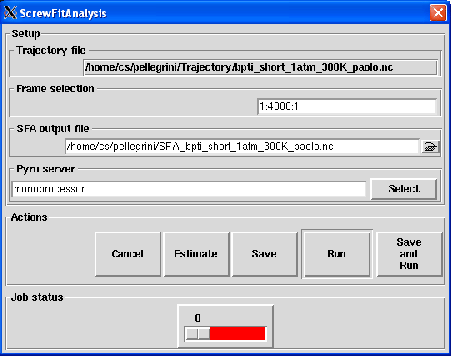

Next: Output
Up: ScrewFit analysis
Previous: Theory and implementation
Contents
Parameters
Pressing the ScrewFit Analysis button will pop up the dialog shown on figure 4.61
Figure 4.61:
The dialog from where the SFA analysis will be set up and run.
|

|
The following input fields controls the parameters for the SFA analysis:
- Trajectory file
Format: string
Default: traj_file where traj_file is the name of the loaded trajectory
Description: the value of this widget can not be changed. It just recalls for information purpose the name
of the trajectory file loaded for the analysis.
- Frame selection
Format: string
Default: 1:traj_length:1 where traj_length is the number of frames of the trajectory.
Description: this widget allows to select the trajectory frames that will be used for the analysis. This must
be a string of the form:
first:last:step
where first is an integer specifying the first frame number to consider, last is an integer specifying the last
frame number to consider and step is an integer specifying the step number between two frames.
For example,
- 2:10:3 will select the frames 2, 5 and 8.
- 1:5:1 will select the frames 1, 2, 3, 4 and 5.
- SFA output file
Format: string
Default: SFA_traj_file.nc where traj_file.nc is the name of the input trajectory
Description: this widget allows to enter the name of the NetCDF output file of the SFA analysis. A CDL
version of the NetCDF output file is also automatically created with SFA_traj_file.cdl name.
Next: Output
Up: ScrewFit analysis
Previous: Theory and implementation
Contents
pellegrini eric
2009-10-06